Activity 1:
Computing the Even Numbers in Two Ways
CHALLENGE
Can the same thing be made using all the numbers once and also using every other number once?
Train a robot called Doubler that receives a number on a nest and gives a bird twice that number. Illustrated instructions for training this robot are the end of this handout. Test out Doubler by giving it a box like this:
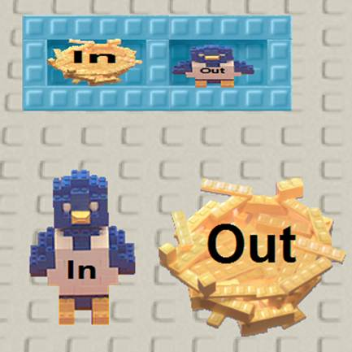
Give the In bird a number and watch what appears on the Out nest. Give the In bird a different number. If Doubler is working as it should then whatever number you give the In bird you should get twice that number on the Out nest.
Clear off the Out nest of all the numbers. Give the In bird 1, and then 2, 3, 4, and 5.
What numbers appear on the Out nest?
|
Let’s give Doubler all the natural numbers (1, 2, 3, and so on forever). Since we can’t type in all the natural numbers we’ll need a robot to help us. We’ll call him Add 1 since that is what he’ll do over and over again. You’ll find instructions for how to build Add 1 at the end of this handout. |
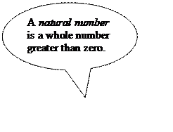 |
To test out Add 1 give it a box like this:
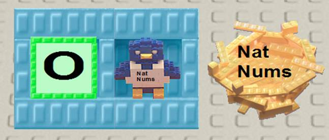
and watch what numbers end up on the Nat Nums nest.
Try connecting Doubler to the sequence of natural numbers made by the Add 1 robot. You can do this by giving Doubler the box:
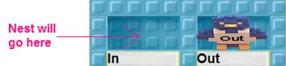
Since the In hole is empty the robot won’t do anything yet. Give the Add 1 robot this box:
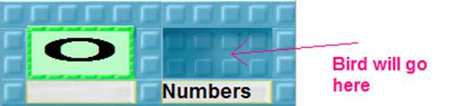
To get these robots to work together take out a nest with an egg in it. Give it a nice name. Drop the bird in the Numbers hole and the nest in the In hole.
Did you notice that the first numbers coming out are even?
Will there ever be an odd number?
Explain
Remember to save your robots in your notebook!
Train a robot called Split. As numbers arrive on the Input nest Split gives them alternatively to bird A and B. Instructions for training Split are at the end of this handout.
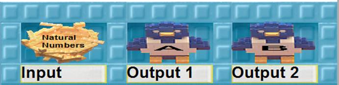
Put the nest that receives the natural numbers produced by the Add 1 robot in the hole labeled Input and give the box to Split. Give the Add 1 robot this box:
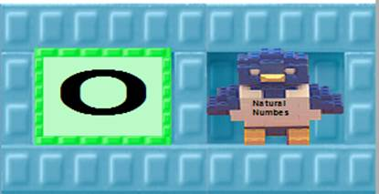
What kind of numbers end up in A’s nest?
What kind of numbers end up in B’s nest?
Remember to save your robots in your notebook
Copy the nest that will receive all the natural numbers produced by the Add 1 robot. Start up the Add 1 robot and you should see each copy of the nest receiving 1, 2, 3 and so on.
Start again and give one copy to your Doubler robot and the other to the Split robot. Now start up the Add 1 robot again with the box:
If all the robots ran forever would there be a difference between the numbers that are on B’s nest and the output nest of Doubler?
If there is a difference, what is it?
If there is no difference, how can they be the same sequence if Doubler uses every natural number and Split puts only half of the numbers on B’s nest?[KK1]
If you saw a room full of boys and girls and everyone was dancing with a partner of the opposite sex, could you figure out if there was the same number of boys as girls? Without counting!
How would you convince someone you are right?[KK2]
Imagine that you are running the Doubler robot and that after the Add 1 robots gives a bird a number it is copied and begins dancing with the output number of the Doubler robot. So 1 dances with 2, 2 with 4, 3 with 6, and so on.
If this continued forever would every even number be dancing with a natural number?
Would every natural number be dancing with an even number?
What does this tell you about how many even numbers there are?
You may be confused at this point. Infinity confused some of the world’s best mathematicians. Galileo Galilei wrote in 1638 about how one line of reasoning leads you to think the sequences have the same number of numbers while another line of reasoning leads you to think there are fewer even numbers.
What do you think?
If you think they all pair up then how do you explain that the sequence of natural numbers contains all the even and all the odd numbers?
If you don’t think they pair up, what is different from the room of boys and girls?[KK3]
Activity 1, Task A:
How to Train the Doubler Robot
|
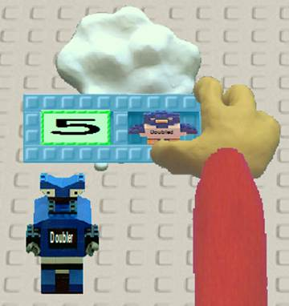 |
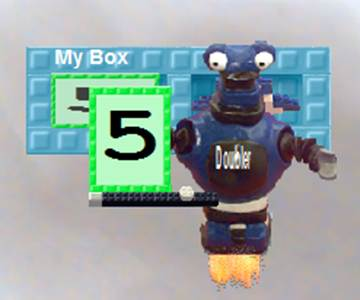 |
|
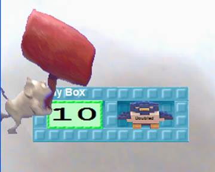 |
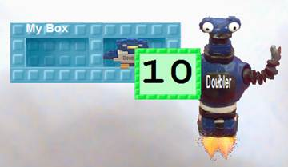 |
Activity 1, Task A:
How to Train the Add 1 Robot
|
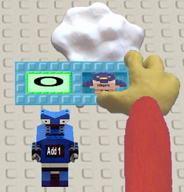 |
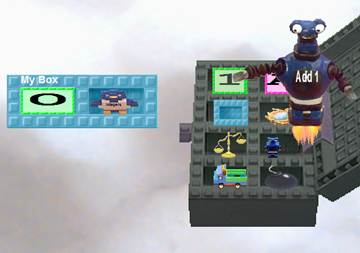 |
|
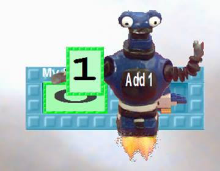 |
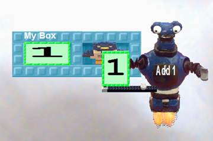 |
Activity 1, Task B: How to Train the Split Robot
|
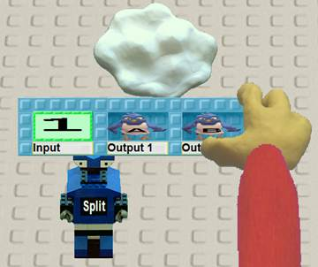 |
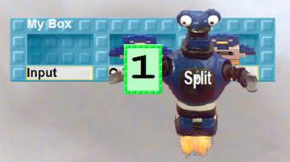 |
|
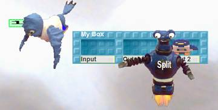 |
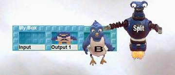 |
|
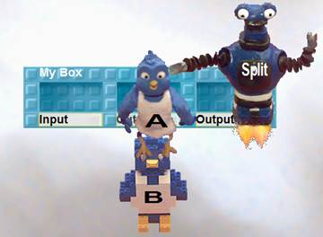 |
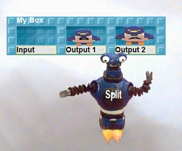 |
[KK1]Although the set of the even numbers is a proper subset of the natural numbers there exists a one-to-one correspondence between these two sets, i.e. they have the same cardinality. That a subset has the same cardinality is possible only for the infinite sets.
The children are likely to have differing opinions of what is happening here so there is a good opportunity for group discussions here.
[KK2]It is obvious there are the same number in the finite case but is it obvious that one-to-one correspondence generalizes to the infinite case?
[KK3]Dancing as pairs is a way to visual one-to-one correspondences. If there is a one-to-one correspondence then the two sets have the same cardinality even if one is a proper subset of another.
One definition of an infinite set is one that can be placed in one-to-one correspondence with a proper subset.